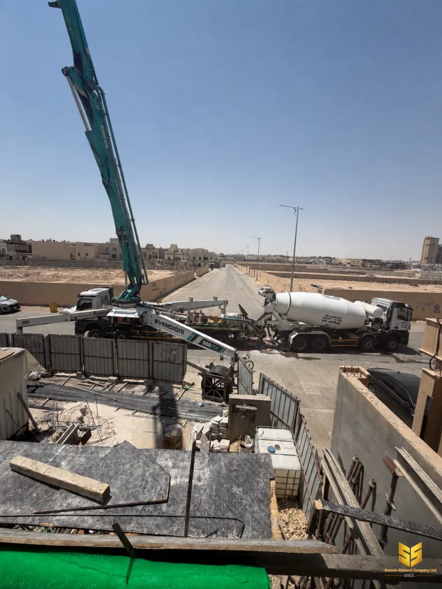

تقنيات
مضافات الخرسانة: المسرّعات والمثبّطات والمالئات
المضافات ليست إضافات تجميلية. كل جرعة منها تغيّر سلوك الخرسانة قبل الصب وبعده، وفي الحارة تصنع الفرق بين صب سليم وصب مشروخ.
الخلطة الخرسانية تتكون من أربعة مكونات رئيسية: الأسمنت، والماء، والرمل، والحصوات. ومن هذه القاعدة وحدها تأتي خرسانة صلبة ثقيلة تحتاج ماء كثيراً وتُصبّ ببطء شديد. والمضافات هي ما ينقل هذه الخلطة إلى خليط يمكن صبه وتشكيله دون أن يتصلّب قبل أوانه.
تضاف المضافات بنسبة من خمسة أجزاء في الألف من وزن الأسمنت في الاستخدامات الشائعة، لذلك فهي تكميات صغيرة لكنها مؤثرة. والسؤال العملي في الموقع: أي نوع نستخدمه، وكم جرعة، وفي أي طقس.
لماذا نحتاج مضافات خرسانية أصلاً
السبب الأول والأوضح هو الانسياب. الخرسانة الجافة تقاوم صبّها، وقد تترك فراغات حول الحديد لا تمتلئ. السبب الثاني هو التصلّب المبكر في الحارة، حيث تجفّ الخرسانة من السطح قبل أن تصلب. والسبب الثالث هو التشقق، لأن الانكماش أثناء تصلّب الخرسانة غير المحصورة يكسرها.
أما السبب الرابع فهو ترشيد الاستهلاك. المضاف المناسب يخفض الماء اللازم للانسياب بقدر ملموس، وهذا الماء المحذوف هو نفسه مصدر تقوية الخرسانة، لأنه الماء الحر الزائد الذي لا يستهلكه الأسمنت في التفاعل الكيميائي.
أنواع المضافات الأربعة
المضافات المالئة
المضافات المالئة هي الأكثر استخداماً في المشاريع السكنية، وأكثرها تأثيراً على شكل الصبّ. وهي تعمل على سطح حبة الأسمنت فتوزّعه، فتفصل جزيئاتها عن بعضها وتُطلق الماء المحبوس بينها.
النتيجة العملية ثلاثية: الخرسانة تصبّ وتتدفق حول الحديد فتملأ الفراغات، وتصل إلى القوالب البعيدة، ويُقبل سطحها بعد التسوية دون معالجة طويلة.
ميزة ثانية لا تقل أهمية: المضاف المالئ يخفض الماء اللازم بنسبة قابلة للقياس، وهذه هي الوسيلة العملية للوصول إلى النسبة المطلوبة في تصنيفات التعرض العالية دون زيادة ماء يخفض المقاومة.
الجرعة الزائدة خطرة. المضاف نفسه في حدوده يرفع الانسياب، وفي حدوده العليا يتعاكس أثره فيتكتّل الخلطة ويلتصق خرطوم الضخ. لذلك تُحسب الجرعة بميزان في المصنع ولا تُقدَّر باليد.
ملاحظة تخصّ الانتباه: بعض المضافات المالئة تسرّع التصلّب قليلاً، وبعضها لا تفعل. النوع الذي لا يسرّع التصلّب هو الأنسب في صيف الرياض، لأنه يمنح وقتاً أطول للصبّ والتسوية.
المسرّعات والمثبّطات
المسرّعات تختصر زمن التصلّب، فتخفض المدة من ساعات إلى أجزاء من الساعة. واستخدامها في المشاريع السكنية محدود: تُستخدم عند الطوارئ التي لا يمكن تأجيلها، أو عند صبّ قطع خرسانية صغيرة في طقس بارد شديد يبطئ التفاعل الكيميائي.
الجانب الخطر أن التسريع يرفع الحرارة المتولدة، ويرفع الانكماش، ويزيد احتمال التشقق. لذلك لا يُضاف مسرّع في صبّ بلاطة كبيرة إلا بجرعة محسوبة وخبرة.
المثبّطات تسير في الاتجاه المعاكس: تطوّل زمن التصلّب. وهي مثالية لصبّ عنصر واحد في كل مرة، لأنها تحتاج كي لا تتصلّب الخرسانة قبل انتهاء الصبّ.
مثال واضح على ذلك صبّ الأرضيات صبّاً متواصلاً. إن لم تكن الخلطة مبطّنة، تتصلّب الطرف الأول ويتوقف الصبّ، ويظهر فاصل خطي مستقيم يمتد عبر البلاطة.
المضافات الهوائية
المضاف الهوائي يحبس فقاعات هوائية دقيقة جداً داخل الخلطة قبل الصبّ. وهذه الفقاعات ليست عيباً، بل هي التي تعطي الخرسانة قدرتها على تحمّل التجمّد.
في المناطق التي تنخفض فيها الحرارة تحت الصفر، يتوسّع الماء المتجمد داخل الخرسانة فيضغط على المصفوفة. الفراغات الهوائية تعطي هذا الماء مكاناً يتمدّد فيه بدل أن يشقّ الخرسانة.
وأما في الرياض فالمناخ لا يستدعيها عادة، لأن التجمّد نادر. لكن وجودها في الخلطة ليس خطأ، والقرار يبقى للمهندس المشرف حسب موقع المشروع وطبيعة الاستخدام.
ملاحظة مهمة عن هذه الإضافة تحديداً: الفقاعات الهوائية تخفض المقاومة، لذلك يرتفع الحد الأدنى المطلوب للمقاومة للتعويض عن هذا النقص. لا تُطلب الإضافة وحدها دون تعديل المقاومة.
الجرعة ولماذا تختلف بين الفصول
الجرعة تُقاس بنسبة مئوية من وزن الأسمنت في الخلطة، وتُحسب في المصنع قبل التحميل. والرقم الذي يتغيّر بين الصيف والشتاء ليس جرعة المضاف، بل جرعة الماء. وهذا هو مفتاح فهم الموضوع كله.
في الصيف ترتفع حرارة الخرسانة الطازجة، فتسارع التصلّب وتجفّ الأسطح. في مثل هذه الحالة يُضاف ماء تبريد، وهذا الماء الإضافي يرفع نسبة الماء فلا بد من تعويضه بجرعة مضاف أعلى.
وفي الشتاء ينعكس الأمر: لا يحتاج المشروع ماء تبريد، لذلك تنخفض نسبة الماء، فيمكن خفض جرعة المضاف، لأن الماء الأقل يعني حاجة أقل لانسياب كافٍ.
ولهذا السبب لا تُنقل جرعة خلطة صيفية شتاءً من دون مراجعة. الخلطة ليست وصفة ثابتة، بل حلّ لمعادلة بين الحرارة والماء والوقت.
أخطاء تفسد الخلطة
- إضافة المضاف في الموقع مباشرة. الجرعة تحتاج تجانساً كاملاً، وإضافتها فوق الخلطة تعطي تكتلاً محلياً.
- مضاعفة الجرعة عند تأخر الصبّ. تأخر الصبّ مشكلة جدولة، وعلاجها بجرعة مضاعفة يضرّ الخرسانة.
- خلط مضافين معاً بلا حساب. كل مضاف له حد خاص، وتجاوزه يقلب أثره.
- استخدام مضاف مجهول المصدر. الجرعة المعتمدة لمنتج بعينه، لا للفئة عامة.
- تجاهل المضاف في حساب النقل. الخلطة المعدّلة تبقى رقيقة، وتحتاج ضبط زمن الدوران حتى لا تفقد صفاتها.
اسأل قبل التحميل
اطلب من المورد أن يحدد لك في محضر التحميل: نوع المضاف، واسم المنتج، ونسبة الجرعة، وما إذا كانت الخلطة معدّلة لظروف الحرارة العالية. هذه أربعة أسئلة تكفي لتعرف أن الخلطة صُنعت لمشروعك.

أهم ما في هذه المقالة
- المضافات تجعل الخرسانة قابلة للصبّ والتشكيل.
- المضاف المالئ هو الأكثر استخداماً والأكثر تأثيراً على السطح.
- الجرعة الزائدة تعكس الأثر وتُتكتّل الخلطة.
- المثبّط ضروري لصبّ الأرضيات صبّاً متواصلاً.
- ما يتغيّر صيفاً وشتاءً هو الماء، وليس جرعة المضاف نفسها.
للعودة إلى الأساس النظري الذي تقوم عليه المضافات، اقرأ مقالة تصنيف التعرض ومتطلبات الخرسانة، فهي التي تحدد النسبة التي تحاول المضافات ضبطها.
عندك موقع في الرياض وتحتاج عرض سعر؟
أرسل لنا تفاصيل المشروع، ونعود إليك بعرض سعر مبدئي.